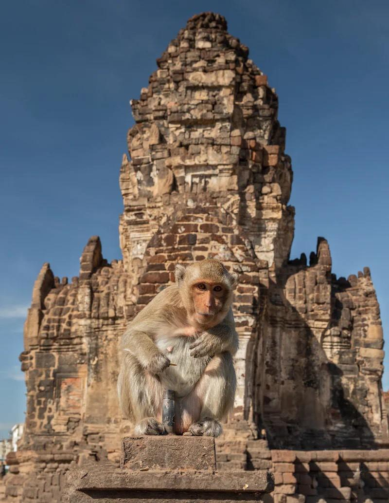
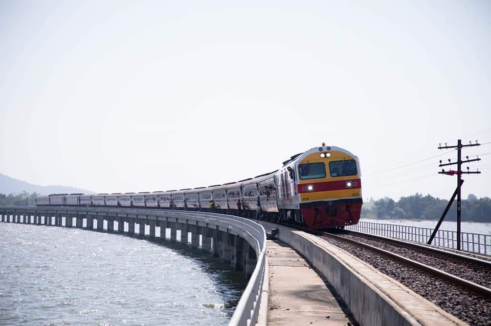
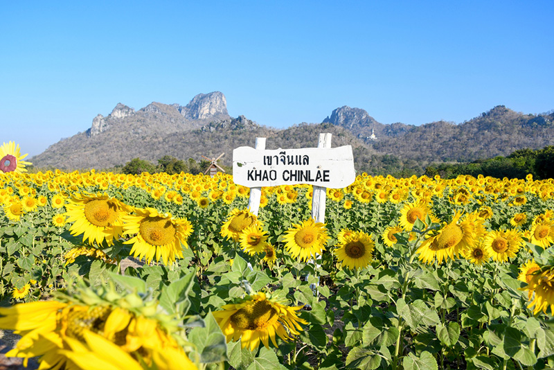

พระปรางค์สามยอด
- ค่าเข้าชม:คนไทย 10 บาท ชาวต่างชาติ 50 บาท
- เวลาทำการ:06:00-18-00 น. ปิดวันจันทร์-อังคาร
- พิกัด:พระปรางค์สามยอด ถนนนารายณ์มหาราช อำเภอเมืองลพบุรี จังหวัดลพบุรี 15000

รถไฟลอยน้ำ
ค่าบริการ:ตั๋วรถไฟธรรมดา ไป-กลับ
- กรุงเทพ-เขื่อนป่าสักชลสิทธิ์ 330 บาท
- สระบุรี/แก่งคอย-โคกสลุง 130 บาท
ตั๋วรถไฟธรรมดา เฉพาะเที่ยวกลับ
- เขื่อนป่าสักชลสิทธิ์-กรุงเทพ 150 บาท
ตั๋วรถไฟปรับอากาศ ไป-กลับ
- กรุงเทพ-เขื่อนป่าสักชลสิทธิ์ 560 บาท
- สระบุรี/แก่งคอย-โคกสลุง 260 บาท
ตั๋วรถไฟปรับอาการ เฉพาะเที่ยวกลับ
- เขื่อนป่าสักชลสิทธิ์-กรุงเทพ 250 บาท
จุดชมวิวภูซับเหล็ก
ค่าเข้าชม
- ฟรี
เวลาทำการ
- เปิดตลอดเวลา ทุกวัน
พิกัด
- จุดชมวิวภูซับเหล็ก ตำบลโคกตูม อำเภอเมืองลพบุรี จังหวัดลพบุรี 15210

ทุ่งทานตะวัน เขาจีนแล
ค่าเข้าชม
- สอบถามเพิ่มเติมได้ที่ facebook - ทุ่งทานตะวันบานเขาจีนแล ลพบุรี
เวลาทำการ
- ฤดูหนาว 08:00-18:00 น.
พิกัด
- ทุ่งทานตะวัน เขาจีนแล ตำบลนิคมสร้างตนเอง อำเภอเมืองลพบุรี ลพบุรี 15000